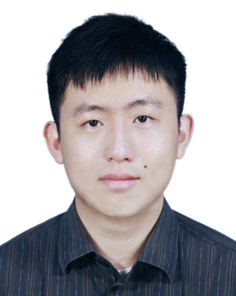

|  | Ph.D. Candidate, |
Currently I'm a Ph.D. candidate in computer science and engineering from The Chinese University of Hong Kong (CUHK). My supervisor is Prof. Bei Yu. Prior to that, I received the M.S. degree in applied physics from The University of Hong Kong (HKU) in 2020 under the supervision of Prof. Jian Wang, and B.S. degree in applied physics from The University of Science and Technology of China (USTC) in 2018.
My research interests include
Electronic Design Automation
Design Space Exploration
Machine Learning
[J6] Ziyang Yu, Su Zheng, Wenqian Zhao, Shuo Yin, Xiaoxiao Liang, Guojin Chen, Yuzhe Ma, Bei Yu, Martin D.F. Wong,“RuleLearner: OPC Rule Extraction from Inverse Lithography Technique Engine”, accepted by IEEE Transactions on Computer-Aided Design of Integrated Circuits and Systems (TCAD).
[J5] Wenqian Zhao, Xufeng Yao, Shuo Yin, Yang Bai, Ziyang Yu, Yuzhe Ma, Bei Yu, Martin D.F. Wong, “AdaOPC 2.0: Enhanced Adaptive Mask Optimization Framework for Via Layers”,accepted by IEEE Transactions on Computer-Aided Design of Integrated Circuits and Systems (TCAD).
[J4] Binwu Zhu, Su Zheng, Ziyang Yu, Guojin Chen, Yuzhe Ma, Fan Yang, Bei Yu, Martin Wong, “L2O-ILT: Learning to Optimize Inverse Lithography Techniques”, accepted by IEEE Transactions on Computer-Aided Design of Integrated Circuits and Systems (TCAD).
[J3] Guojin Chen, Ziyang Yu, Hongduo Liu, Yuzhe Ma, Bei Yu, “DevelSet: Deep Neural Level Set for Instant Mask Optimization”, accepted by IEEE Transactions on Computer-Aided Design of Integrated Circuits and Systems (TCAD).
[J2] Ziyang Yu, Peiyu Liao, Yuzhe Ma, Bei Yu, Martin D.F. Wong, “CTM-SRAF: Continuous Transmission Mask-based Constraint-aware Sub Resolution Assist Feature Generation”, accepted by IEEE Transactions on Computer-Aided Design of Integrated Circuits and Systems (TCAD).
[J1] Ziyang Yu, Guojin Chen, Yuzhe Ma, Bei Yu, “A GPU-enabled Level Set Method for Mask Optimization”, accepted by IEEE Transactions on Computer-Aided Design of Integrated Circuits and Systems (TCAD).
[C8] Ziyang Yu, Peng Xu, Zixiao Wang, Binwu Zhu, Qipan Wang, Yibo Lin, Runsheng Wang, Bei Yu, Martin Wong, “SDM-PEB: Spatial-Depthwise Mamba for Enhanced Post-Exposure Bake Simulation”, ACM/IEEE Design Automation Conference (DAC), San Francisco, Jun. 22–25, 2025.
[C7] Su Zheng, Xiaoxiao Liang, Ziyang Yu, Yuzhe Ma, Bei Yu and Martin Wong, “Curvilinear Optical Proximity Correction via Cardinal Spline”, ACM/IEEE Design Automation Conference (DAC), San Francisco, Jun. 22–25, 2025.
[C6] Fangzhou Liu, Zehua Pei, Ziyang Yu, Haisheng Zheng, Zhuolun He, Tinghuan Chen, Bei Yu, “CBTune: Contextual Bandit Tuning for Logic Synthesis”, IEEE/ACM Proceedings Design, Automation and Test in Europe (DATE), Valencia, Spain, Mar. 25–27, 2024.
[C5] Ziyang Yu, Chen Bai, Shoubo Hu, Ran Chen, Taohai He, Mingxuan Yuan, Bei Yu, Martin Wong, “IT-DSE: Invariant Risk Minimized Transfer Microarchitecture Design Space Exploration”, IEEE/ACM International Conference on Computer-Aided Design (ICCAD), San Francisco, Oct. 29–Nov. 02, 2023.
[C4] Wenqian Zhao, Xufeng Yao, Ziyang Yu, Guojin Chen, Yuzhe Ma, Bei Yu, “AdaOPC: A Self-Adaptive Mask Optimization Framework For Real Design Patterns”, IEEE/ACM International Conference on Computer-Aided Design (ICCAD), Oct. 30–Nov. 3, 2022.
[C3] Guojin Chen, Ziyang Yu, Hongduo Liu, Yuzhe Ma, Bei Yu, “DevelSet: Deep Neural Level Set for Instant Mask Optimization”,IEEE/ACM International Conference on Computer-Aided Design (ICCAD), Nov. 1–4, 2021.
[C2] Ziyang Yu, Guojin Chen, Yuzhe Ma, Bei Yu, “A GPU-enabled Level Set Method for Mask Optimization”, IEEE/ACM Proceedings Design, Automation and Test in Europe (DATE), Feb. 1-5, 2021.
[C1] Yuzhe Ma, Ziyang Yu, Bei Yu,“CAD Tool Design Space Exploration via Bayesian Optimization”, ACM/IEEE Workshop on Machine Learning for CAD (MLCAD), Alberta, Canada, Sep. 3-4, 2019.
OpenILT: An open-source platform for inverse lithography technology (ILT) research.
IEEE Transaction on Computer-Aided Design of Integrated Circuits and Systems (TCAD)
ACM Transaction on Design Automation of Electronic Systems (TODAES)
2023 Spring: CSCI3310 Mobile Computing and Applications Development
2022 Spring: CSCI1520 Computer Principles and C Programming
2021 Fall: CSCI3190 Introduction to Discrete Mathematics and Algorithms
2020 Spring: PHYS3760 Physics Laboratory
2019 Fall: PHYS4150 Computational Physics
2019 Spring: PHYS2250 Introductory Mechanics
Advisor: Prof. Jian Wang
Jan 2018 - May 2018
Postgraduate Scholarship CUHK 2021-2024
Postgraduate Scholarship HKU 2018-2020
Outstanding Student Scholarship USTC 2015
Outstanding Freshman Scholarship USTC 2014
Languages: C/C++, Python, Matlab, LaTex
Platforms: Windows, MacOS, Linux